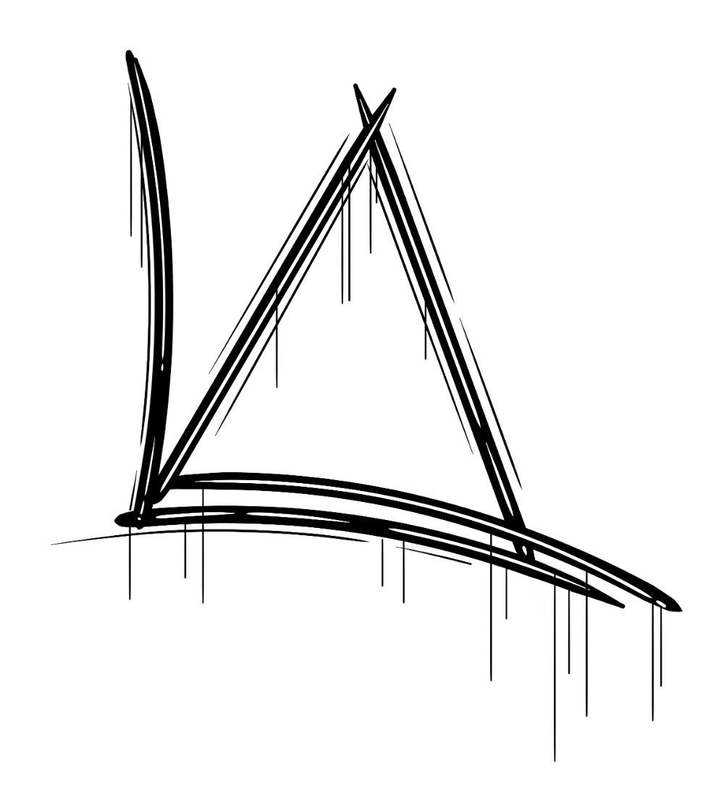

Google Glass
A revolução do Google está chegando
[AQUI ENTRA UMA FOTO]
Menu Principal
- Home
- Especificações
- Fotos
- Multimídia
- Fale conosco
Glass > Especificações
Raio-X no Google Glass
por Gustavo Guanabara
Atualizado em 01/Maio/2013
Clique em qualquer área destacada da imagem para ter mais informações sobre os recursos do Google Glass. Qualquer ponto vermelho vai te levar a um lugar cheio de novas informações.
[AQUI ENTRA UMA IMAGEM]
Copyright 2013 - by Gustavo Guanabara<
Facebook | Twitter